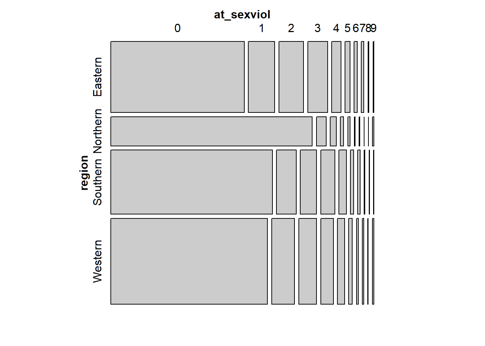

Chapter 4 Data Carpentry
4.1 Introduction
We have already introduce the typical workflow of data analysis:
 In this figure produced by Hadley Wickham you can see the first stage of data analysis involve importing your data, getting it into a tidy format, and then doing some transformations so that you get the data in good shape for analysis. There is a famous and possibly false statistic that says that 80% of an analyst time is often devoted to this kind of operations. Although the statistic is likely made up, the truth is that the experience of many analysts resonates with it. So, you should not underestimate data carpentry or data wrangling (as these processes are often called) as a part of your analysis.
In this figure produced by Hadley Wickham you can see the first stage of data analysis involve importing your data, getting it into a tidy format, and then doing some transformations so that you get the data in good shape for analysis. There is a famous and possibly false statistic that says that 80% of an analyst time is often devoted to this kind of operations. Although the statistic is likely made up, the truth is that the experience of many analysts resonates with it. So, you should not underestimate data carpentry or data wrangling (as these processes are often called) as a part of your analysis.
For various decades, social scientists of a quantitative persuasion worked primarily with survey data (for an excelent history of how this come to be you can read this book), which came in rather tidy formats, but often required some transformations. Today we are more likely to rely on “big” and other new forms of data (from the web, administrative sources, or a variety of sensors) that may require more significant processing before we can do any analysis with it. Think, for example, of data from online vendors of drugs available in the Dark Net. Some people talk of the advent of a new computational social science around this new methods. This kind of data, indeed, opens avenues for research we could only dream of in the past as argued by some of our colleagues. But getting this kind of data requires the development of new skills (e.g, web scrapping) and generally requires more processing before they are tidy and ready for analysis.
R is particularly well suited for this new world. In this module we only work with survey data, which tends to be tidier and easier to work with in an introductory module. But even when working with this kind of data you often have to think hard about required tidying and transformations before you can start your analysis.
In this module we expect you to download a survey dataset for analysis. These datasets are already rather tidy and have been professionally cleaned and prepared for analytical consumption. But you may still have to select cases and variables that are appropriate for your own analysis. Also, you likely will need to generate new variables or change existing ones for various reasons. It’s a rare data set in which every variable you need is measured directly. Examples of things you may need to do include:
- Combine various variables into a new one (eg., computing a rate)
- Reduce the number of levels in a categorical variable
- Format the variable to assign it to a more appropriate class if this is called for (e.g., character into factor). You will need to format date variables as dates, numerical variables as numbers, etc.).
- Recode values identifying missing cases as NA.
- Labelling all variables and categorical values so you don’t have to keep looking them up.
- Change the labels associated with the levels of a categorical variable.
4.2 A template for your assignment
For this practical we are going to proceed as if we had an assignment similar to yours. Only that we will use different data, specifically data from a Eurobarometer. Eurobarometers are opinion polls conducted regularly on behalf of the European Commission since 1973. Some of them ask the same questions over time to evaluate changes in European’s views in a variety of subjects (standard Eurobarometers). Others are focused on special topics and are conducted less regularly (special Eurobarometers). They are a useful source of datasets that you could use for your undergraduate dissertation.
The data from these surveys is accessible through the data catalogue of GESIS, a data warehouse at the Leibniz Institute for the Social Sciences in Germany. For downloading data from GESIS you have to register with them (following the registration link) here. Once you activate your registration you should be able to access the data at GESIS.

GESIS has a section of their website devoted to the Eurobarometer survey. You can access that section here. You could navigate this webpage to find the data we will be using for this tutorial, but to save time I will provide you a direct link to it. We will be using the special Eurobarometer 85.3 form 2016. This survey among other things asked Europeans about their views on gender violence.

You can access the data for this eurobarometer here.

You will see here that there are links to the files with the data in SPSS and STATA format. You can also see a tab where you could obtain the questionnaire for the survey. Once you are registered download the STATA version of the file and also an English version of the questionnaire. Make sure you place the file in your working directory. Once you do this you should be able to use the code we are using in this session.
First, we will load the data into our session. Since the data is in STATA format we will need to read the data into R using the haven package. Specifically, we will use the read_dta function for importing STATA data into R. As an argument we need to write the name of the file with the data (and if it is not in your working directory, the appropriate path file).
library(haven)
eb85_3 <- read_dta("ZA6695_v1-1-0.dta")
dim(eb85_3)## [1] 27818 483We can see there are over 27000 cases (survey participants) and 483 variables.
4.3 Thinking about your data: filtering cases
For the final coursework assignment, you will need to download other datasets but the process will be similar in that once you have the datasets you will need to think about what cases and what variables you want to work with. Imagine that we had to write our final assignment using this dataset and that we had to write a report about attitudes to sexual violence.
First, we would need to think if we wanted to use all cases in the data or only a subset of the cases. For example, when using something like the Eurobarometer we would need to consider if we are interested in exploring the substantive topic across Europe or only for some countries. Or alternatively you may want to focus your analysis only on men attitudes to sexual violence. In a situation like this you would need to filter cases. This decision needs to be guided by your theoretical interests and your driving research question.
So, for example, if we only wanted to work with the UK sample we would need to figure out if there is a variable that identifies the country in the dataset. In the questionnaire you can see indeed that there is such a variable:

What we do not know is how this variable is named in the dataset. For this we need to look at the codebook. In this case, we can look at the interactive facility provided for GESIS for online data analysis, which provides an interactive online codebook for this dataset. You can access this facility in the link highlighted in the image below:

You can access similar applications for the two datasets that you need to use for the final coursework assignment. If you will use the ESS you can use an online facility here and if you are using the CSEW you can access a similar tool here.
Let’s explore the online facility for the Eurobarometer. If we expand the menus in the left hand side by clicking in variable description, and then in standard nation id variables, you will see there is a variable that provides a “country code”. This must be it. click on it and then you will see in the right hand side some information about this variable. You see the name of this variable (as it will appear in the dataset) isocntry and we can see this variable uses ISO 3166 codes to designate the country. This is an international standard set of abbreviations for country names. For the UK these codes are “GB-GBN” and “GB-NIR” (for Northern Ireland).

Now that we have this information we can run the code to select only the cases that have these values in the dataset. For doing something like that we would use the dplyr::filter function. We used the filter function in week 2. You can read more about it in the dplyr vignette.
library(dplyr)
#First, let's see what type of vector isocntry is
class(eb85_3$isocntry)## [1] "character"uk_eb85_3 <- filter(eb85_3, isocntry %in% c("GB-GBN", "GB-NIR"))The variable isocntry is a character vector with codes for the different participating countries. Here we want to select all the cases in the survey that have either of two values in this vector (GB-GBN or GB-NIR). Since these values are text we need to use quotes to wrap them up. Because we are selecting more one value we cannot simply say isocntry == "GB-BGN". We also need the cases from Northern Ireland. So, we use a particular operator introduced by dplyr called the piping operator (%in%). The piping operator is essentially saying to R “and then”. Basically, here we are creating a vector with the values we want and then asking R to look at those values within list (containing the right labels) in the the isocntry vector so that we can filter everything else out.
If you run this code you will end up with a new object called uk_eb85_3 that only has 1306 observations. We have now a dataset that only has the British participants.
4.4 Selecting variables: using dplyr::select
Perhaps for your coursework you define your essay question in such a way that you do not need to do any a priory filtering. Perhaps, for the sake of this example, we decide to do an analysis that focuses on looking at attitudes toward sexual violence for all of Europe and for all participants. Yet, you won’t be using 483 variables for certain. Among other reasons because our guidelines for the essay suggest you use fewer variables. But more generally because typically your theoretical model will tell you that some things matter more than others. The first thing you need to do is think about what variables you are going to use. This involves first thinking about what variables are available in the dataset that measure your outcome of interest but then also consider what your theory of attitudes to gender violence say (this generally will include things that are not measured in the survey, such is life!).
The thing you are interested in explaining or better understanding is attitudes regarding sexual violence. So, before anything else you would need to spend some time thinking about how this survey measures these attitudes. You would need to screen the questionnaire and the codebook to identify these variables and their names in the dataset. Have a look at the questionnaire. The questions about gender violence start at the bottom of page 7. Which of these questions are questions about attitudes towards sexual violence?
Homework 4.1: Identify the name of all the variables that pertain to attitudes toward sexual violence. You will need this list in front of you when doing the Blackboard test
Once you have all of this you would need to think about which of these survey questions and items make more sense for your research question. This is something where you will need to use your common sense but also your understanding of the literature in the topic. Criminologists and survey researchers spend a lot of time thinking about what is the best way of asking questions about topics or concepts of interest. They often debate and write about this. So, as part of your essay, you will need to consider what do researchers consider are good questions to tap into the concepts you are studying.
There are many items in this survey that relate to this topic (and you need to identify as part of homework 4.1), but for purposes of continuing our illustration we are going to focus on the answers to question QB10. This question asks respondents to identify in what circumstances may be justified to have sexual intercourse without consent. The participants are read a list of items (e.g., “flirting before hand”) and they can select various of them if so they wish.

Ok, so we have now selected our variable. Say that we have done so on the basis of our understanding of the literature. Next we need to identify these variables in the dataset. What name is associated with this variable? Let’s look at the online interactive facility.

Damn! We have one question but several variables! This is common when the question in the survey allows for multiple responses. Typically when this is read into a dataset, survey researchers create a variable for each of the possible multiple responses. If the respondent identified one of those potential responses they will be assigned a “yes” or a “1” for that column. If they did not they will be assigned a “no” or a “0”. Let’s see how this was done in this case:
class(eb85_3$qb10_1)## [1] "haven_labelled"This is a vector labelled by haven. We could see what labels were used using the attributes function.
attributes(eb85_3$qb10_1)## $label
## [1] "INTERCOURSE W/O CONSENT APPROPRIATE WHEN: WEARING SEXY CLOTHES"
##
## $format.stata
## [1] "%8.0g"
##
## $class
## [1] "haven_labelled"
##
## $labels
## Not mentioned Mentioned
## 0 1We can see here that the value 1 corresponds to cases where this circumstance was mentioned. Let’s see how many people considered this a valid circumstance to have sex without consent.
table(eb85_3$qb10_1)##
## 0 1
## 24787 3031Fortunately, only a minority of respondents.
Apart from thinking about the variables we will use to measure our outcome of interest for the coursework assignment you will need to select some variables that you think may be associated with this outcome. In the essay you will need to select a wider set. Here we will only do a few. Again, this is something that needs to be informed by the literature (what variables does the literature considers important) and your own interest.
For the sake of illustration, let’s say we are going to look at gender, political background of the respondent, country of origin, age, occupation of the respondents, and type of community they live in. Most of these are demographic variables (not always the more fun or theoretically interesting), but that’s all we have in this eurobarometer and so they will have to do.
The same way you try to identify the names of the variables for your outcome variable, you would need to do this for the variables you use to “explain” your outcome. Once you have done your variable selection you can subset your data to only include these.
df <- select(eb85_3, qb10_1, qb10_2, qb10_3, qb10_4,
qb10_5, qb10_6, qb10_7, qb10_8, qb10_9,
qb10_10, qb10_11, qb10_12, d10, d11,
isocntry, d1, d25, d15a, uniqid)Ta-da! We now have a new object called df with only the variables we will be working with. In this format, it is easier to visualise the data. Notice we have also added a variable called uniqid. With many datasets like this you will have a unique id value that allows you to identify individuals. This id may be handy later on, so we will preserve it in our object.
If you View this object df you will notice that the selected variables appear in the order you selected them. If you wanted a different arrangement, for example you may have preferred to have uniqid as your first column, you could have modified the code like so:
df <- select(eb85_3, uniqid, qb10_1, qb10_2, qb10_3, qb10_4,
qb10_5, qb10_6, qb10_7, qb10_8, qb10_9,
qb10_10, qb10_11, qb10_12, d10, d11,
isocntry, d1, d25, d15a)Or if you just want to reorder one or few columns (for example you want to also move d1, d25 and d15 a to the front), you could use everything() afterwards to save some typing, as below:
df <- select(df, uniqid, d1, d25, d15a, everything())If you want to add a lot of columns, it can save you some typing to have a good look at your data and see whether you can’t get to your selection by using chunks. Since qb10_1 and the others are one after the other in the dataset we can use the start.col:end.col syntax like below:
df <- select(eb85_3, uniqid, qb10_1:qb10_12, d10, d11,
isocntry, d1, d25, d15a)If you have a lot of columns with a similar structure you can use partial matching by adding starts_with(), ends_with() or contains() in your select statement. So, for example, an alternative to the syntax above we could use the following:
df <- select(eb85_3, uniqid, starts_with("qb10"), d10, d11,
isocntry, d1, d25, d15a)Notice how the text we pass as an argument goes between double quotes.
An alternative is to deselect columns by adding a minus sign in front of the column name. You can also deselect chunks of columns. Don’t execute the code below for this practical, but if you wanted, for example to get rid of uniqid you could do the following:
df <- select(df, -uniqid)Yes, a lot of these tips are about saving you some typing. Being lazy (productive, efficient) is fine. You can find more tips like this and useful ideas if you want to rename your columns or variables in this tutorial.
4.5 Creating summated scales
Now comes the next part. What are we going to do with these variables? How are we going to use them? Here you need to do some thinking using your common sense and also considering how other researchers may have used this question about attitudes to sexual violence. There’s always many possibilities.
We could, for example, consider that we are going to split the sample in two: those that consider any of these circumstances valid and those that didn’t. We would then end up with a binary indicator that we could use as our outcome variable in our analysis.
The thing is that doing that implies loosing information. We may think that someone that consider many circumstances as valid is not the same than the person that only considers one as valid. Yet, creating a global binary indicator would treat these two individuals in the same way.
Another alternative could be to see how many of these circumstances are considered valid excuses for each individual and to produce a sum then for every respondent. Since there are 9 “excuses” we could have a sum from 0 to 9. This is a very rough summated scale. You can read more about the proper development of summated scales here.
Let’s do this. We are going to create a new variable that add up the responses to qb10_1 all the way to qb10_9. For this we use the mutate function from the dplyr package.
df <- mutate(df,
at_sexviol = qb10_1 + qb10_2 + qb10_3 + qb10_4 +
qb10_5 + qb10_6 + qb10_7 + qb10_8 + qb10_9)
table(df$at_sexviol)##
## 0 1 2 3 4 5 6 7 8 9
## 19681 2529 2117 1643 841 416 255 155 57 124We have a skewed distribution. Most people in the survey consider that none of the identified circumstances are valid excuses for having sexual intercourse without consent. On the other hand, only a minority of individuals (124) consider that all of these 9 circumstances are valid excuses for having sex without consent. A high score in this count variable is telling you the participant is more likely to accept a number of circumstances in which sexual intercourse without consent is acceptable. You may read more about count data of this kind here.
Hold on for a second, though. There is a variable qb10_10 that specifies people that answered “none of these” circumstances. In theory the number of people with a “1” in that variable (that is, selected this item) should equal 19681 (the number of zeros in our new variable). Let’s check this out:
table(df$qb10_10)##
## 0 1
## 9400 18418Oops! Something doesn’t add up! Only 18418 people said that none of these circumstances were valid. So why when we add all the other items we end up with 19681 rather than 18418? Notice that there is also a qb10_11 and a qb10_12. These two items identify the people that refused to answer this question and those which did not know how to answer it.
table(df$qb10_11)##
## 0 1
## 27563 255table(df$qb10_12)##
## 0 1
## 26810 1008There are 255 people that refused to answer and 1008 that did not know how to answer. If you add 1008, 255, and 18418 you get 19681. So our new variable is actually computing as zeroes people that did not know how to answer this question or refused to answer it. We do not want that. We do not know what these people think, so it would be wrong to assume that they consider that none of these circumstances are valid excuses for sexual intercourse without consent.
There are many ways to deal with this. He could simply filter out cases where we have values of 1 in these two variables (since we don’t know their answers we could as well get rid of them). But We could also recode the variable to define this values as what they are NA (missing data, cases for which we have no valid information).
df$at_sexviol[df$qb10_11 == 1 | df$qb10_12 == 1] <- NA
table(df$at_sexviol)##
## 0 1 2 3 4 5 6 7 8 9
## 18418 2529 2117 1643 841 416 255 155 57 124Pay attention to the code above. When we want to recode based in a condition we use something like that. What we are saying with that code is that we are going to assign as “NA” (missing data) the cases for which the condition between the square brackets are met. Those conditions are as defined, when the participants answered don’t know or (the logical operator for “or” is “|”) refused to answer the question (that is when qb10_11 or qb10_12 equals 1). You can see other scenarios for recoding using this kind of syntax in the resources we link below. You can see other logical operators used in R here.
Notice that once we do the recoding and rerun the frequency distribution you will see we achieved what we wanted. Now all those missing cases are not counted as zero.
Summated scales like the one we created here are quick and not the most kosher way of combining several questions into a single measure. In research methods you probably learnt that we often work with theoretical constructs that we do not observe directly (e.g., self control, anomie, collective efficacy, etc.). We often call these latent variables. In order to study these constructs we create measures or scales that are based in observed variables (those we actually include and ask in the survey). This is a famous measure of depression often used in research. As you can see we have different questions (our oberved variables) that we think are related to our latent or not observed (directly) variable (depression). You can also see there are several items or questions all of which we researchers think are linked to depression in this scale. If you provide positive answers to many of these questions we may think that you have this unobserved thing we call depression.
When measuring latent variables it is a good idea to have multiple items that all capture aspects of the unobserved variable we are really interested in measuring. There is a whole field of statistics that focuses in how to analise if your observed variables are good indicators of your unobserved variable (psychometry is how we call this field in psychology) and also that focuses on how to best combine the answers to our observed variables in a single score (latent variable modelling). Some of the scores in the Crime Survey for England and Wales that you may use for your essay have been created with this more advanced methods (some of the measures on confidence in the police, for example). Summated scales are not really the best way to do this. But these are more advanced topics that are covered in upper level undergraduate or postgraduate courses. So for now, we will use summated scales as a convenient if imperfect way of aggregating observed variables.
4.6 Collapsing categories in character variables
One of the variables we selected is the country in which the participant lives. Let’s have a look at this variable.
table(df$isocntry)##
## AT BE BG CY CZ DE-E DE-W DK EE ES
## 1016 1029 1001 501 1060 533 1052 1010 1001 1008
## FI FR GB-GBN GB-NIR GR HR HU IE IT LT
## 1042 1009 1006 300 1000 1026 1046 1002 1013 1004
## LU LV MT NL PL PT RO SE SI SK
## 508 1010 500 1003 1002 1000 1007 1109 1012 1008There are 30 countries in the sample. You may consider that for the purposes of your analysis maybe that is too much. For the sake of this tutorial, let’s say that maybe you are not really interested in national differences but in regional differences across different parts of Europe. Say you may want to explore whether these attitudes are different across Western/Central Europe, Scandinavian countries, Mediterranean countries, and Eastern Europe. You do not have a variable with these categories but since you have a variable that gives you the nations you could create such a variable. How would you do that?
First, you need to consider what the new categories are going to be and how you are going to distribute the countries in your sample across those categories. You may do that in a piece of paper. Then you would need to write the code to have a new variable with this information.
We are going to group the countries in 4 regions: Western (AT, BE, CZ, DE-E, DE-W, FR, GB-GBN, GB-NIR, IE, LU, NL), Eastern (BG, EE, HU, LT, LV, PL, RO, SK), Southern (CY, ES, GR, HR, IT, MT, PT, SI), and Northern Europe (DK, FI, SE).
Then you need to figure out what kind of variable we are dealing with here:
class(df$isocntry)## [1] "character"Ok, this is a categorical unordered variable, we know that. But this kind of variables could be encoded into R as either character vectors, factor variables, or as we have seen as well as haven_labelled. How you recode a variable is contingent in how it is encoded. Here we are going to show you how you would do the recoding with a character variable such as isocntry into another character variable we will call region. We will see later examples for how to recode factors.
We will have a variable with four new categories (Western, Southern, Eastern, and Northern) whenever the right conditions are met. See the code below:
df$region[df$isocntry == "AT" | df$isocntry == "BE" |
df$isocntry == "CZ" | df$isocntry == "DE-E" |
df$isocntry == "DE-W" | df$isocntry == "FR" |
df$isocntry == "GB-GBN" | df$isocntry == "GB-NIR" |
df$isocntry == "IE" | df$isocntry == "LU" |
df$isocntry == "NL"] <- "Western"
df$region[df$isocntry == "BG" | df$isocntry == "EE" |
df$isocntry == "HU" | df$isocntry == "LT" |
df$isocntry == "LV" | df$isocntry == "PL" |
df$isocntry == "RO" |
df$isocntry == "SK"] <- "Eastern"
df$region[df$isocntry == "DK" | df$isocntry =="FI" |
df$isocntry == "SE"] <- "Northern"
df$region[df$isocntry == "CY" | df$isocntry == "ES" |
df$isocntry == "GR" | df$isocntry =="HR" |
df$isocntry == "IT" | df$isocntry =="MT" |
df$isocntry == "PT" |
df$isocntry =="SI"] <- "Southern"
table(df$region)##
## Eastern Northern Southern Western
## 8079 3161 7060 9518What we are doing above is initialising a new variable in the df object that we are calling region. We are then assigning to each of the four categories in this character vector those participants in the survey that have the corresponding values in the isocntry variable as defined for each category within the square brackets. So for example if Austria is the value in isocntry we are telling R we want this person to be assigned the value of “Western” in the region variable. And so on. You can see the list of ISO country codes here.
Once you have created the variable you could start exploring if there is any association with our outcome variable. For example, using mosaic plots from the vcd package (if you don’t have it installed the code won’t run).
library(vcd)## Loading required package: gridmosaic(~region + at_sexviol, data = df)
In a mosaic plot like this the height of the region levels indicate how big that group is. You can see there are many more observations in our sample that come from Western countries than from Northern countries. Here what we are interested is the length. We see that Northern countries have proportionally more people in the zero category than any other group. On the other hand, Eastern countries have the fewer zeros (so looking as if attitudes more permissive towards sexual violence are more common there, even if still a minority). We will come back to this kind of plots later on this semester.
4.7 Working with apparently cryptic variable names and levels
Let’s look at the variable d10 in our dataset:
table(df$d10)##
## 1 2
## 12230 15588What is this? Unclear, isn’t it? If you look at the questionnaire you will see that this variable measures gender, that values of 1 correspond to men and that values of 2 corresponds to woman. But this is far from straightforward just by looking a the printed table or the name of the variable.
To start with we may want to change the name of the variable. One way to do this is the following:
colnames(data)[colnames(data)=="old_name"] <- "new_name"Of course, we need to change the names for valid ones in our case. So adapting that code we would write as follows:
colnames(df)[colnames(df)=="d10"] <- "gender"If you prefer the tydiverse dialect (that aims to save you typing among other things), then you would use the rename function as below (beware if you already renamed d10 using colnames there will be no longer a d10 variable and therefore R will return an error).
df <- rename(df, gender=d10)If you now check the names of the variables (with the names function) in df you will see what has happened:
names(df)## [1] "uniqid" "qb10_1" "qb10_2" "qb10_3" "qb10_4"
## [6] "qb10_5" "qb10_6" "qb10_7" "qb10_8" "qb10_9"
## [11] "qb10_10" "qb10_11" "qb10_12" "gender" "d11"
## [16] "isocntry" "d1" "d25" "d15a" "at_sexviol"
## [21] "region"If you want to change many variable names it may be more efficient doing it all at once. First we are going to select fewer variables and retain only the ones will continue using:
df <- select(df, uniqid, at_sexviol, gender, d11, d1, d25, d15a, region)Now we can change a bunch of names all at once with the following code:
names(df)[4:7] <- c("age", "politics", "urban", "occupation")
names(df)## [1] "uniqid" "at_sexviol" "gender" "age" "politics"
## [6] "urban" "occupation" "region"You may have seen we wrote [4:7] above. This square bracket notation is identifying the columns within that particular object. It is indicating to R that we only wanted to change the name of the variables defining column 4 to 7 in the dataframe, those corresponded to d11, d1, d25, and d15a, which respectively (we can see in the questionnaire) correspond to age, politics, whether the respondent live in a urban setting, and occupation. We assign to those columns the names we specify (in the appropriate order) in the list that follows. Now we will be less likely to confuse ourselves, since we have columns with meaningful names (which will appear in any output and plots we produce).
Let’s look at occupation:
table(df$occupation)##
## 1 2 3 4 5 6 7 8 9 10 11 12 13 14 15
## 1588 1864 1845 8916 129 14 384 768 517 878 313 1921 2202 856 2062
## 16 17 18
## 271 2471 819There are 18 categories here. And it is not clear what they mean.
class(df$occupation)## [1] "haven_labelled"Remember that this is haven_labelled. If we look at the attributes we can see the correspondence between the numbers above and the labels.
attributes(df$occupation)## $label
## [1] "OCCUPATION OF RESPONDENT"
##
## $format.stata
## [1] "%8.0g"
##
## $class
## [1] "haven_labelled"
##
## $labels
## Responsible for ordinary shopping, etc.
## 1
## Student
## 2
## Unemployed, temporarily not working
## 3
## Retired, unable to work
## 4
## Farmer
## 5
## Fisherman
## 6
## Professional (lawyer, etc.)
## 7
## Owner of a shop, craftsmen, etc.
## 8
## Business proprietors, etc.
## 9
## Employed professional (employed doctor, etc.)
## 10
## General management, etc.
## 11
## Middle management, etc.
## 12
## Employed position, at desk
## 13
## Employed position, travelling
## 14
## Employed position, service job
## 15
## Supervisor
## 16
## Skilled manual worker
## 17
## Unskilled manual worker, etc.
## 18Having to look at this every time is not very convenient. You may prefer to simply use the labels directly. For this we can use the to_factor function from the labelled package.
library(labelled)
df$f_occup <- to_factor(df$occupation)
class(df$f_occup)## [1] "factor"table(df$f_occup)##
## Responsible for ordinary shopping, etc.
## 1588
## Student
## 1864
## Unemployed, temporarily not working
## 1845
## Retired, unable to work
## 8916
## Farmer
## 129
## Fisherman
## 14
## Professional (lawyer, etc.)
## 384
## Owner of a shop, craftsmen, etc.
## 768
## Business proprietors, etc.
## 517
## Employed professional (employed doctor, etc.)
## 878
## General management, etc.
## 313
## Middle management, etc.
## 1921
## Employed position, at desk
## 2202
## Employed position, travelling
## 856
## Employed position, service job
## 2062
## Supervisor
## 271
## Skilled manual worker
## 2471
## Unskilled manual worker, etc.
## 819Now you have easier to interpret output.
4.8 Recoding factors
As we said there are many different types of objects in R and depending on their nature the recoding procedures may vary. You may remember that many times categorical variables will be encoded as factors. Let’s go back our newly created f_occup. We have 18 categories here. These are possibly too many. Some of them have to few cases, like fisherman. Although this is a fairly large dataset we only have 14 fisherman. It would be a bit brave to guess what fishermen across Europe think about sexual violence based in a sample of just 14 of them.
This is a very common scenario when you analyse data. In these cases is helpful to think of ways of adding the groups with small counts (like fishermen in this case) to a broader but still meaningful category. People often refer to this as collapsing categories. You also have to think theoretically, do you have good enough reasons to think that there’s ought to be meaningful differences in attitudes to sexual violence among these 18 groups? If you don’t you may want to collapse into fewer categories that may make more sense.
As when we created the region variable the first thing to do is to come out with a new coding scheme for this variable. We are going to use the following. I’m not making this scheme up, I am just using the scheme that the ESS uses to simplify these categories.
1 Self-employed (5 to 9 in d15a)
2 Managers (10 to 12 in d15a)
3 Other white collars (13 or 14 in d15a)
4 Manual workers (15 to 18 in d15a)
5 House persons (1 in d15a)
6 Unemployed (3 in d15a)
7 Retired (4 in d15a)
8 Students (2 in d15a)It would be quicker to recode from d15a into a new variable (there would be less typing when dealing with numbers rather than labels). But here we are going to use this example to show you how to recode from a factor variable, so instead we will recode form f_occup.
As often in R, there are multiple ways of doing this. We could use dplyr::recode. But here we will show you how to do this using the recode function from the car library.
df$occup2 <- df$f_occup
levels(df$occup2) <- list("Self-employed" =
c("Farmer" , "Fisherman" ,
"Professional (lawyer, etc.)" ,
"Owner of a shop, craftsmen, etc.",
"Business proprietors, etc."),
"Managers" =
c("Employed professional (employed doctor, etc.)",
"General management, etc.",
"Middle management, etc."),
"Other white collar" =
c("Employed position, at desk",
"Employed position, travelling"),
"Manual workers" =
c("Employed position, service job",
"Supervisor",
"Skilled manual worker",
"Unskilled manual worker, etc."),
"House persons" = "Responsible for ordinary shopping, etc.",
"Unemployed" = "Unemployed, temporarily not working",
"Retired" = "Retired, unable to work",
"Student" = "Student")One of the things you need to be very careful with when recoding factors or character variables is that you need to input the chunk of texts in the existing variables exactly as they appear in the variable. Otherwise you will get into trouble. So, for example, if in the code above you wrote fishermen instead of Fisherman you would have 14 less cases in the Self-Employed level than you should have. When doing this kind of operations is always convenient to check that the categories add up correctly.
For more details in how to recode factors and other potential scenarios you may want to read this paper by Amelia McNamara and Nicholas Horton.
4.9 Understanding missing data
As we have already seen you will have participants that do not provide you with valid answers for the questions in the survey. In general in any kind of data set you work with, whether it comes from surveys or not, you will have cases for which you won’t have valid information for particular variables in your dataframe. Missing data is common.
Let’s look at the politics variable.
class(df$politics)## [1] "haven_labelled"table(df$politics)##
## 1 2 3 4 5 6 7 8 9 10 97 98
## 1433 830 2161 2217 6690 2238 2056 1658 474 1126 2766 4169sum(is.na(df$politics))## [1] 0It looks as if we have no missing data. Right? Well, appearances can be deceiving sometimes.

This is the question as it was asked from the survey respondents. Notice the difference in the response options and the categories in politics. We know that those that see themselves further to the left will have answer 1 and those that see themselves further to the right would have answer 10. What does 97 and 98 then refers to? And if you look at the questionnaire you will see that those that refuse or don’t know in the questionnaire are coded as 11 and 12.
Let’s look closer at the attributes:
attributes(df$politics)## $label
## [1] "LEFT-RIGHT PLACEMENT"
##
## $format.stata
## [1] "%8.0g"
##
## $class
## [1] "haven_labelled"
##
## $labels
## Box 1 - left Box 2 Box 3 Box 4 Box 5
## 1 2 3 4 5
## Box 6 Box 7 Box 8 Box 9 Box 10 - right
## 6 7 8 9 10
## Refusal DK
## 97 98A tip if you don’t want to see as much output. If you want to access directly only some of the attributes you can call them directly modifying the code as below:
attributes(df$politics)$labels## Box 1 - left Box 2 Box 3 Box 4 Box 5
## 1 2 3 4 5
## Box 6 Box 7 Box 8 Box 9 Box 10 - right
## 6 7 8 9 10
## Refusal DK
## 97 98Or we could use the val_labels function from the labelled package for the same result:
val_labels(df$politics)## Box 1 - left Box 2 Box 3 Box 4 Box 5
## 1 2 3 4 5
## Box 6 Box 7 Box 8 Box 9 Box 10 - right
## 6 7 8 9 10
## Refusal DK
## 97 98Notice that though the questionnaire assigned a value of 11 to refusal and 12 to “don’t know” answers, in the dataset those values are instead 97 and 98. You will see this often 97, 98, 99, and similar codes are often used to denote missing data.
You may have good theoretical reasons to preserve this in your analysis. Perhaps you think that people that did not answer this question have particular reasons not to do so and those reasons may be associated with their attitudes to violence. In that case you may want to somehow preserve them in your analysis. Absent that rationale you may just want to treat them as they are: missing data. You just have no way of knowing if these people are more or less lefty or conservative. So let’s declare them as such for sake of explaining how you would do that:
df$politics[df$politics>=97] <- NA
table(df$politics)##
## 1 2 3 4 5 6 7 8 9 10
## 1433 830 2161 2217 6690 2238 2056 1658 474 1126The equal or greater operator in R is written as >=. What we are saying in the first statement to R is that whenever politics has a value equal or greater than 97 we are going to recode those cases as NA, as missing data. Since this is a haven_labelled vector we can use numbers here rather than characters or factor levels as part of the recoding. That makes things a bit easier in that it saves typing. Let’s look a the results:
summary(df$politics)## Min. 1st Qu. Median Mean 3rd Qu. Max. NA's
## 1.000 4.000 5.000 5.196 7.000 10.000 6935Now you see you have 6935 cases with missing data. As always it is good to check the original variable. We had 2766 and 4169 between refusals and “don’t know” respondents. These add up to 6935.
Let’s check something else:
library(skimr)
skim(df$politics)## Warning: No summary functions for vectors of class: haven_labelled.
## Coercing to character##
## Skim summary statistics
##
## -- Variable type:character --------------------------------------
## variable missing complete n min max empty n_unique
## df$politics 6935 20883 27818 1 2 0 10Mmmmm. The summary function worked, but other functions do not know to treat the values in the haven_labelled vector as a numeric. So, to avoid problems we may want to define as such (if we truly believe this is a quantitative rather than a categorical variable or at the very least are willing to treat it as quantitative).
df$politics_n <-as.numeric(df$politics)If you try this now, you will see it works:
skim(df$politics_n)If we want to see what percentage of cases is NA across our dataset we could use colMeans combined with is.na. This will compute the mean (the proportion) of cases that are NA in each of the columns of the dataframe:
colMeans(is.na(df))## uniqid at_sexviol gender age politics urban
## 0.00000000 0.04540226 0.00000000 0.00000000 0.24929902 0.00000000
## occupation region f_occup occup2 politics_n
## 0.00000000 0.00000000 0.00000000 0.00000000 0.24929902This is suspicious. Only the variables we have created and already sorted seem to have NA. This may be a function of the haven_labelled vectors behaving like with the original politics variable. Let’s explore it. We can use the val_labels function from the labelled package to extract labels from the whole dataframe like this:
val_labels(df)## $uniqid
## NULL
##
## $at_sexviol
## Not mentioned Mentioned
## 0 1
##
## $gender
## Man Woman
## 1 2
##
## $age
## 15 years 96 years
## 15 96
## 99 and older [not documented]
## 99
##
## $politics
## Box 1 - left Box 2 Box 3 Box 4 Box 5
## 1 2 3 4 5
## Box 6 Box 7 Box 8 Box 9 Box 10 - right
## 6 7 8 9 10
## Refusal DK
## 97 98
##
## $urban
## Rural area or village Small/middle town Large town
## 1 2 3
## DK
## 8
##
## $occupation
## Responsible for ordinary shopping, etc.
## 1
## Student
## 2
## Unemployed, temporarily not working
## 3
## Retired, unable to work
## 4
## Farmer
## 5
## Fisherman
## 6
## Professional (lawyer, etc.)
## 7
## Owner of a shop, craftsmen, etc.
## 8
## Business proprietors, etc.
## 9
## Employed professional (employed doctor, etc.)
## 10
## General management, etc.
## 11
## Middle management, etc.
## 12
## Employed position, at desk
## 13
## Employed position, travelling
## 14
## Employed position, service job
## 15
## Supervisor
## 16
## Skilled manual worker
## 17
## Unskilled manual worker, etc.
## 18
##
## $region
## NULL
##
## $f_occup
## NULL
##
## $occup2
## NULL
##
## $politics_n
## NULLNotice that in urban there are explicit codes for missing data but that these values won’t be treated as such, at least we do something. Let’s see how many cases we have in this scenario:
table(df$urban)##
## 1 2 3 8
## 8563 11881 7356 18Not too bad. Let’s sort this variable:
df$urban[df$urban>=8] <- NA
df$f_urban <- to_factor(df$urban)
table(df$f_urban)##
## Rural area or village Small/middle town Large town
## 8563 11881 7356
## DK
## 0mean(is.na(df$f_urban))## [1] 0.0006470631You can see that even though have now no cases with a value of 8 or DK, the label appears printed in the output. This is still a valid level:
levels(df$f_urban)## [1] "Rural area or village" "Small/middle town" "Large town"
## [4] "DK"So, we may want to remove it explicitly if we don’t want output reminding us what we already know, that “there are not” DK cases (since now we call them and treat them as NA). For removing unused levels in a factor we use the droplevels function,
df$f_urban <- droplevels(df$f_urban)
table(df$f_urban)##
## Rural area or village Small/middle town Large town
## 8563 11881 7356Above also saw the codes for gender let’s use to_factor again for this variable:
df$f_gender <- to_factor(df$gender)Let’s just keep the variables we will retain for our final analysis:
df_f <- select(df, uniqid, at_sexviol, f_gender, age, politics_n,
f_urban, f_occup, region)We are going to do some further exploration of NA. Let’s create a new variable that identifies the cases that have missing data in at least one of the columns in the data with the final variables for our analysis. For this we can use the complete.cases function that creates a logical vector indicating whether any of the cases has missing values in at least one column:
df_f$complete <- complete.cases((df_f))
table(df_f$complete)##
## FALSE TRUE
## 7634 20184mean(df_f$complete)## [1] 0.7255734So, shocking as this may sound you only have full data in 72% of the participants. Notice how the percentage of missing cases in the variables range:
colMeans(is.na(df_f))## uniqid at_sexviol f_gender age politics_n
## 0.0000000000 0.0454022575 0.0000000000 0.0000000000 0.2492990150
## f_urban f_occup region complete
## 0.0006470631 0.0000000000 0.0000000000 0.0000000000The function complete.cases is returning what cases have missing data in any of the variables not in a singular one. It is not unusual for this percentage to be high. You may end up with a massive loss of cases even though the individual variables themselves do not look as bad as the end scenario.
4.10 Exploring dataframes visually
We have covered now a number of functions you can use to explore your data, such as skimr::skim(), str(), summary(), table(), or dplyr::glimpse(). But sometimes is useful to get a more panoramic way. For this we can use the visdat package for visualising whole dataframes amd its main function vis_dat().
library(visdat)
vis_dat(df_f)
Nice one! You get a visual representations of how your variables are encoded in this dataframe. You have several categorical variables such as region, f_gender, f_urban, and f_occup. We see that region is encoded as a character vector, whereas the others are factors. For the purposes of this course, it is generally better to have your categorical variables encoded as factors. So one of the next steps in our data prep may be to recode region as a factor.
df_f$f_region <- as.factor(df_f$region)We can also see we have age, a quantitative variable, age, encoded as haven_labelled. We could as well encoded as numeric.
df_f$age <- as.numeric(df_f$age)What we do with at_sexviol depends on how we decide to treat it. But for arguments sake let’s say we are going to treat it as numerical.
df_f$at_sexviol <- as.numeric(df_f$at_sexviol)The othe piece of info you get with vis_dat is the prevalence of missing data (NA) for each variable (the dark horizontal cases represent a missing case in the variable). We can summarise missing data visually more clearly with vis_miss.
vis_miss(df_f)
Homework 4.2: Select the key outcome variable from the data set you have selected for your final assignment. By outcome variable we mean the variable or variables that tap into the concept you will be exploring with this assignment. In the practical today that was attitudes toward sexual violence. For your assignment it will be one of the four topics you selected in previous weeks. You need to look at the dataset screen the questions that tap into this concept and select a few you may want to explore before making a final decision as to whicn you will be using for sure. Do any recoding you may need to this variable (including creating summated scales or collapsing variables if it seems appropriate) and produce descriptive and visual analysis of this variable/s.
4.11 Further resources
There are many other ways to recode variables and create new variables based in existing ones. Here we only provided some examples. We cannot exhaust all possibilities in this tutorial. For the purposes of the assignment you may have specific ideas of how you may want to combine variables or recode existing ones. You can find additional examples and code for how to do the recoding of variables in the following links. Please make sure that you spend some time looking at these additional resources. They are not optional.
Wrangling categorical data in R
http://rprogramming.net/recode-data-in-r/
http://www.cookbook-r.com/Manipulating_data/Recoding_data/
https://mgimond.github.io/ES218/Week03a.html
https://www.r-bloggers.com/from-continuous-to-categorical/
You should also look for the dplyr documentation for the functions mutate() and recode().
If you would like to combine several variables into one for your analysis in more complex ways but do not know how to do that, please do get in touch. Also do not hesitate to approach us if you have any other specific queries.